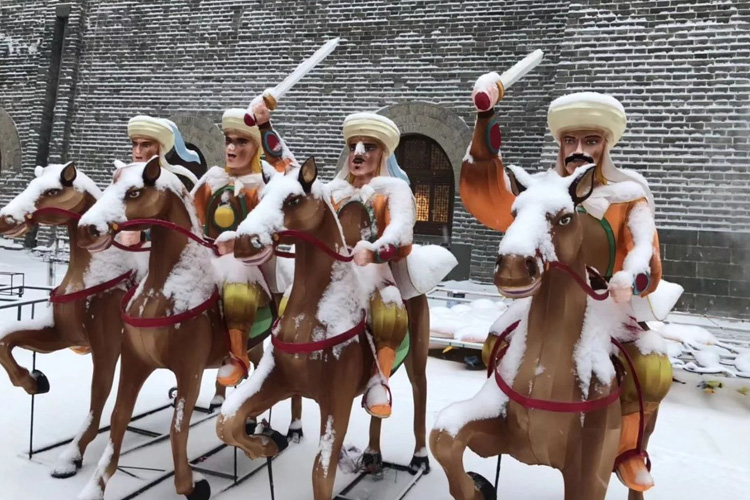

2018-02-12 10:12
1月7日，迎着飘飞的雪花，记者再次来到南城墙关城传统彩灯制作现场，看到这里依然是一派火热场景，随着灯组制作渐进尾声，工人师傅们正各司其职，忙着对灯组进行裱糊、彩绘、转运，以及对部分灯组进行最接近完美的调整。
本届灯会预定2月8日（农历腊月廿三）亮灯，将在四面古城墙之上、以六个主题展区串联各种互动类活动，在古都市民及来同游客欢度吉祥喜庆、平安祥和的传统节日之时，营造一场绚丽华贵的彩灯文化盛宴，续写“中国古都，天下大同”的壮美文化传奇。据介绍，本届灯会范围包括大同古城东、南、西、北城墙上下场地，古城东南隅文化广场、华严寺广场、御东新区等相关场地。主展地大同古城东西南北四面城墙灯组设置，拟分为“喜迎盛世”“中华传奇”“丝路风情”“大同故事”“童话世界”“民俗文化”6个主题展区。